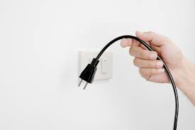
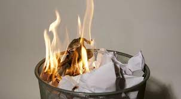
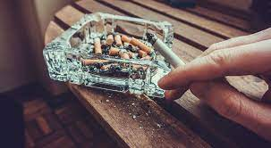
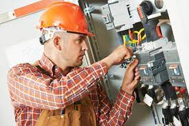
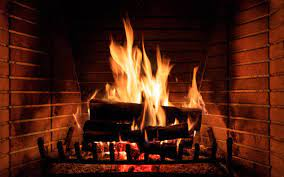

Risks associated with fire rise when communities get closer and tighter, particularly as a result of urbanization. Most home fires are unintentional, frequently caused by the use of open flame heaters, stoves, or indoor lighting. However, smoking carelessly is another major factor in fires, and fires can also be started on purpose as acts of arson or public violence. While house fires ultimately affect hundreds of thousands of residences annually throughout the world. A house and other buildings can potentially be completely consumed by fire in a matter of minutes. The difficulties of getting fire response equipment into narrow streets and high-rise buildings, where the middle and top stories are, can increase the risk of fire in urban areas.
Unplug any items you don't have to use |
Whenever there is too much electricity running through something in your house, there is a risk of a fire. Even when they are off, electronics like computers, TVs, game consoles, and many more use electricity. That means that they are always prone to surges or simple overheating that results in a fire. They have a source for a fire as well because to the constant flow of energy into them. You can lessen your chances of starting a fire by unplugging these appliances while you're not using them and not paying attention to them. |
Keep flammable objects away from heat |
Always keep flammable materials, such as fabrics, paper, and even hair, away from sources of high heat or flame. When lighting a fire in your fireplace, you should keep your clothing and hair out of the way. The stack of papers should not be placed near your wax melter. Also, you want to confirm that you're always on the look out for anything that might develop into an issue. It's important to keep an eye on heat sources and anything nearby if you don't want a fire to start anyplace. |
Stop Smoking indoors |
If you do smoke, it's important to do so in a place with good ventilation and to totally extinguish the cigarette before throwing it. Cigarettes include a number of chemicals and ingredients that might cause them to burn even after you thought they are gone. The flame could potentially start a fire inside your garbage can or outside your house. You may reduce this danger by making sure to smoke outside, keeping an eye out for stray ashes, and making sure to put the cigarette out completely before putting it away. |
Regularly check the electrical system |
Although you shouldn't go into your home's walls to inspect electrical lines, you should check everything that is visible. Keep an eye on your home's wall outlets and pay notice to any that stop functioning suddenly.There might be proof that there is an issue within the walls. Check your electric accessories for frayed or damaged cords. You shouldn't plug these into your electrical system if you already know there is an issue because they could also be warning indications. |
Put out the fire |
The use of a fireplace requires constant attention to what you're doing. In order to observe the fireplace and ensure that the fire doesn't reignite, you should be sure to turn out the fire well before you plan to leave the area.Logs can continue to have flames inside them that appear years later, and embers can continue to smolder and burn. Make careful to properly extinguish the fire before keeping an eye out for any potential re-ignitions before sleeping for the night. |